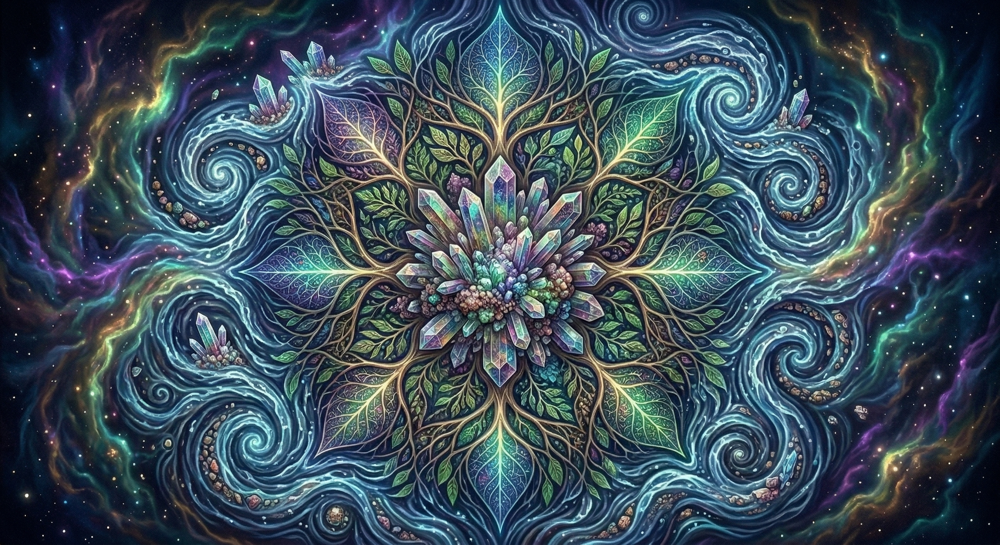

AI MUSIC GENERATOR
DiT description. Bio-lum luminescent energy and particle networks organically connect and flow through all components, create, intertwined, living biological ecosystem - complex, shifting cosmic nebula gradients

CRYSTAL FREQUENCY
ELEMENTAL FLOW
COSMIC VIBRATION
STATE: ACTIVE [SYNC]